Week 2
This was the first code art project that I made for the class. Working with Code.org, I made the shape that you see
It was a really fun introduction to the class and what we would be doing. Making it much less intimidating to get into coding.
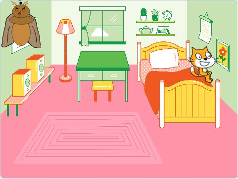
Week 3
This project was based on making a narrative through an animation site. I really enjoyed this project, having my animation tell the story of a moth breaking a lamp.
and the conflict from there. It was really fun to try and tell an interesting story with some of the limitations that were provided.
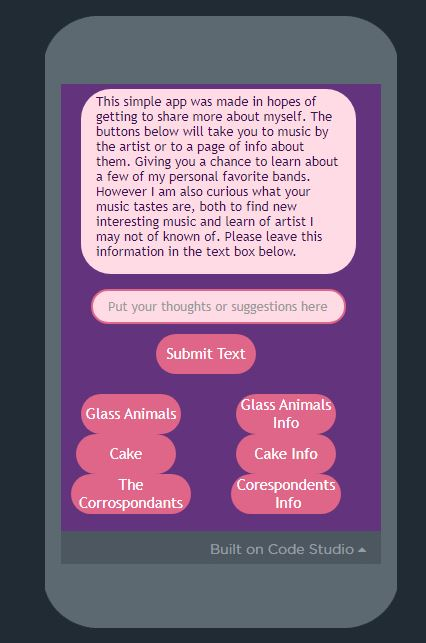 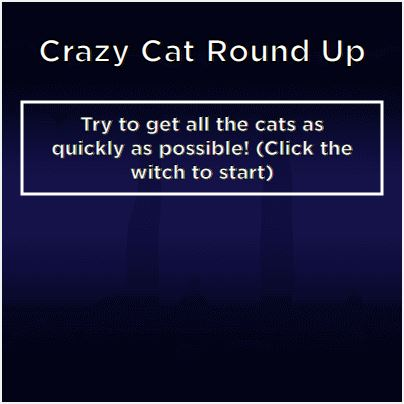
Week 4
These were two parts of the same project, making use of practicing coding by making an app and game. The App was based on being a music
directory. With information on bands, their music. With many different pages and things to help show you the bands and their music. While the game was a simple creation that used
mouse and keyboard interaction. The idea of the game is to catch 3 cats while avoiding a dog. Collecting enough points to win the game. Similar to the story, the game was a fun test of
creating something with interesting limitations.

Week 5
This project was based on making an animation in Alice. Telling a story about a ghosts pet chicken, and the ghost getting home from work. Wanting to sit down and watch some tv. Only to have the chicken end up breaking the TV due to not getting attention. After which he is kicked out of the house. While being silly, this work with Alice both was an interesting look at animation, and coding. Giving a more fleshed out look at how many uses coding can have in a fun way.
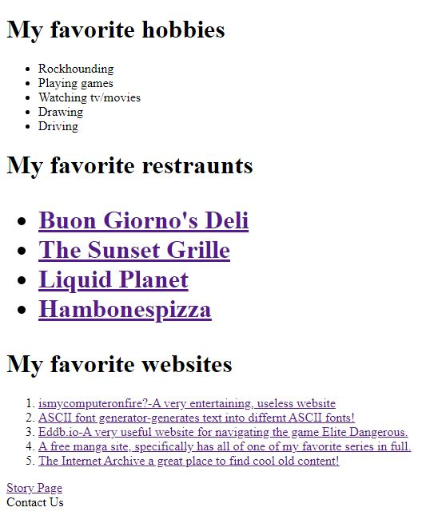 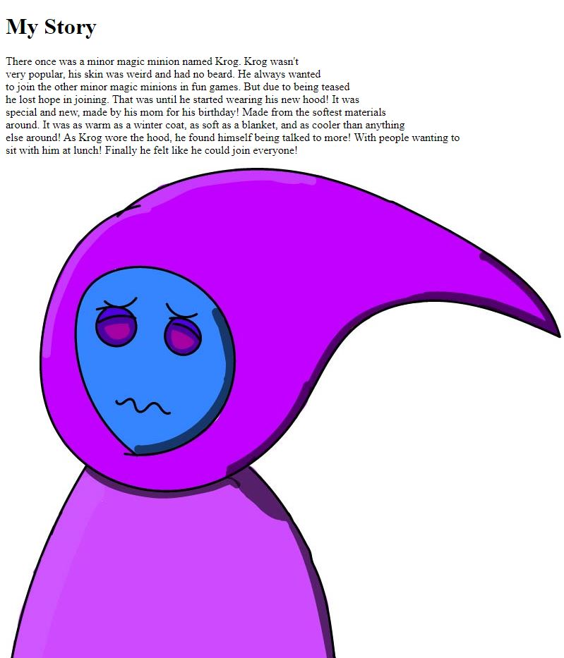 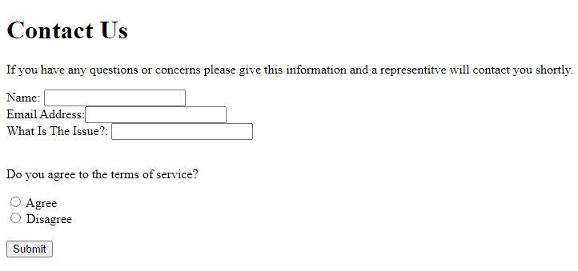
Week 6
This project was the first in working with web pages. Having us make a simple but fun 3 page website. The website has us detail and list our interests, favorite websites and restraunts. It was a really nice way to get into working with web pages. Having us also write a story and basic contact page which we later built onto.
 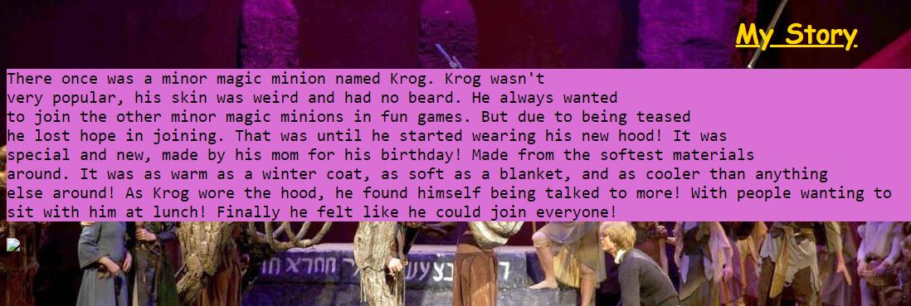
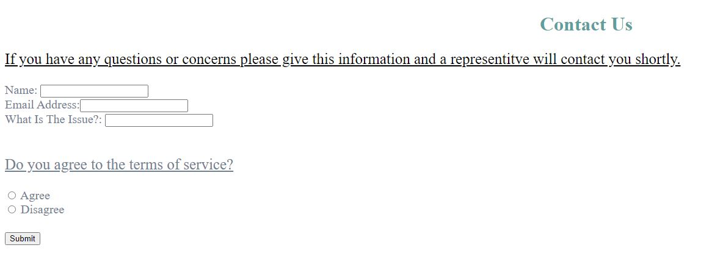
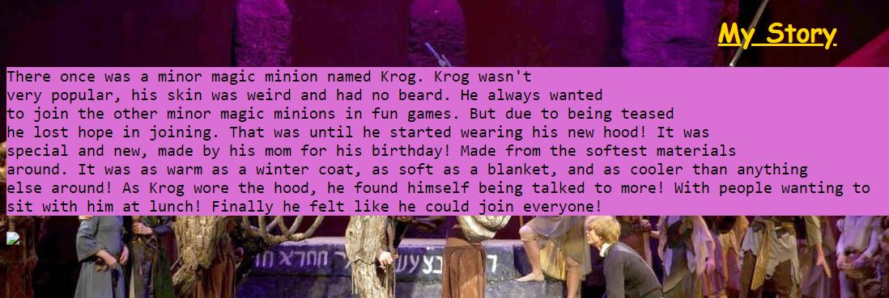
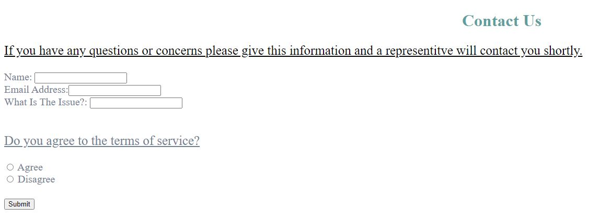
Week 7
This was a bit more advanced than the week prior. While using week 6 as a base I added on to it. Styling the lists, adding color, background images and the contact page. Giving more detail and life to the page that may not have been there before.
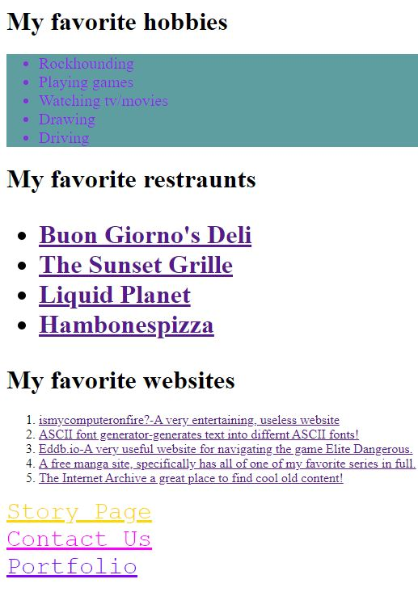 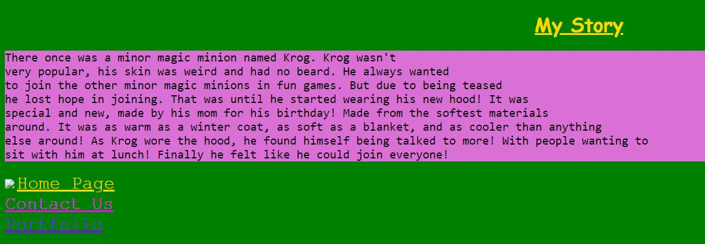 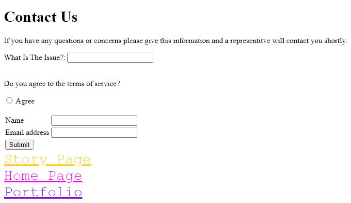
Week8
This was the final version of the web page that we worked on. Finalizing the designs for the lists, story(which I changed a bit) and contact page. This week was mostly notable for having me make a contact page that required you to agree to the terms of service and provide both your name and email. It was a really interesting look at starting work with Java Script. While this was a week that challenged me with the new Java stuff, it turned out great!
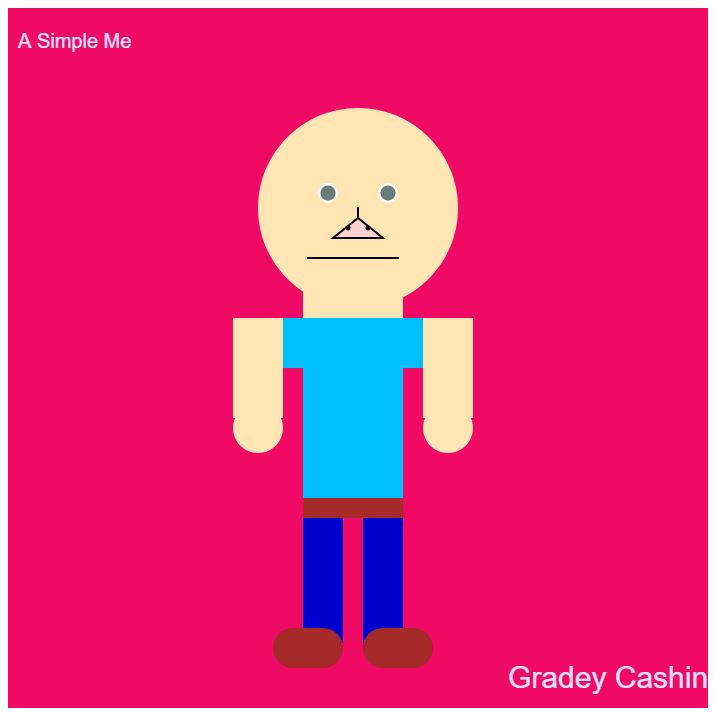
Week 9
This week's project was mostly focused at diving into using Java Script. With us creating a simple but interesting picture of ourselves with nothing but Java Script. I really enjoyed how mine turned out, and how the week pushed me towards focusing on how to use Java. Finding that while before starting the class, it was much more confusing and intimidating.
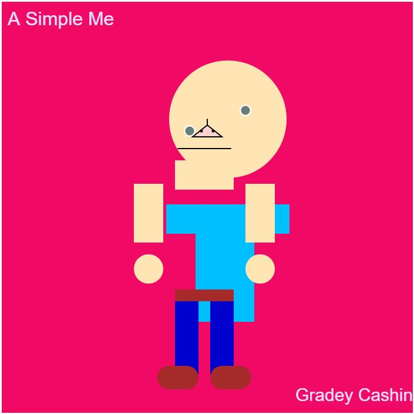
Week 10
For this project I worked off of what I made in week 9. Making it go from being a static image of myself, to now have movement in many elements. Making the body go from being static to growing, arms moving around and even font changing size. It was a great look into how to animate things with Java Script.
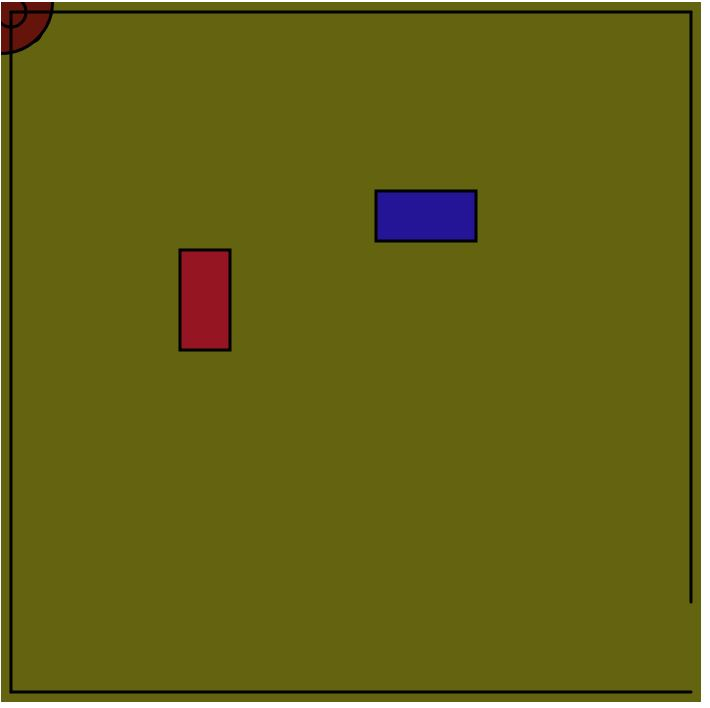
Week 11
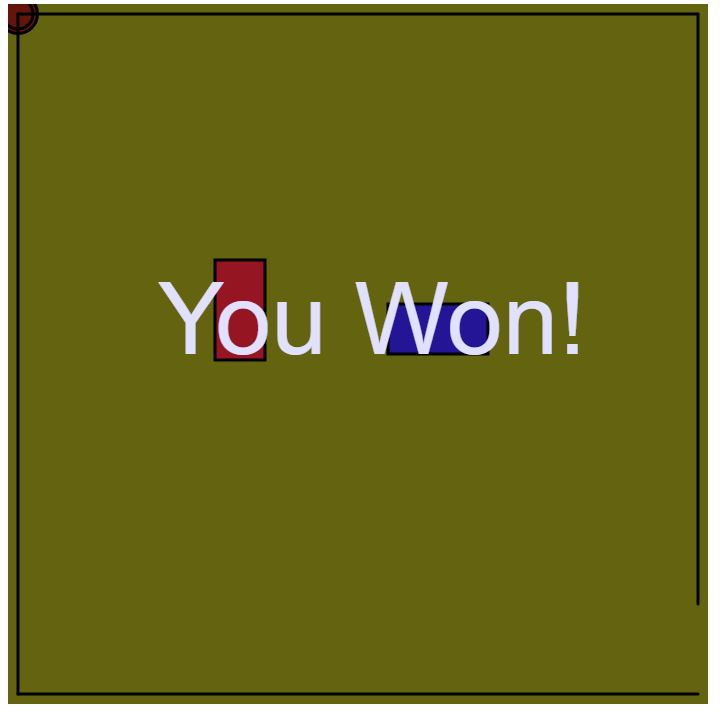
Week 12
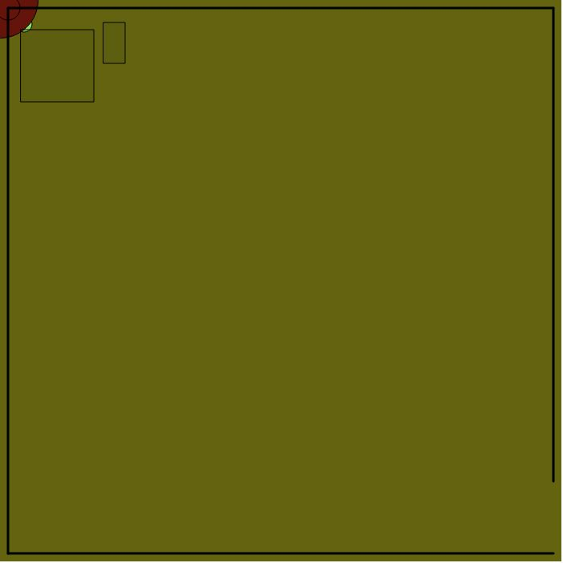
Week 13